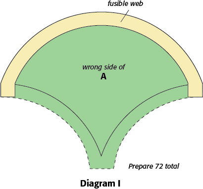
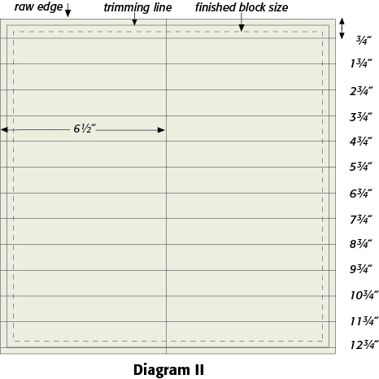
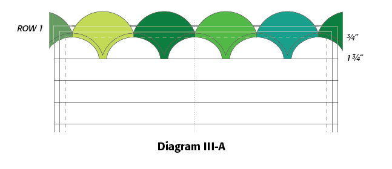
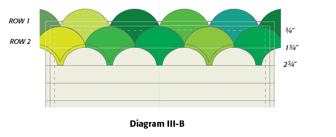
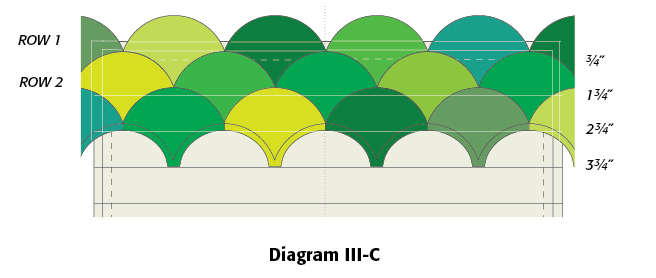
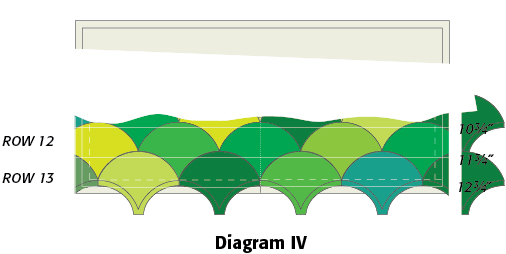
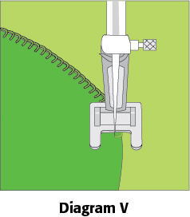

Forty Shades of Green Pattern

Skill Level
INTERMEDIATE
Finished Block Size
12″ x 12″
Cutting Instructions:
Note: Read through pattern before cutting.
Download Templates: Click here to download a .pdf with templates.
Preparing the Scallops
Step 1: To prepare Template A, trace on template plastic, including placement lines. Cut out directly on outer lines. Place plastic Template A on assorted green fabrics; mark around template. Cut out 72 fabric scallops and transfer placement lines to right side of each.
To prepare fusible-web B shapes, trace 72 on paper side of paper-backed fusible web. Cut out on drawn lines.
Step 2: Place A, wrong side up, on appliqué pressing sheet or parchment paper. Align B with top curve and straight-side corners of A and fuse in place. To protect iron you may wish to fold pressing sheet or parchment paper over A and B before fusing. Remove paper from fusible web B when cool. Prepare 72 total scallops with fusible web (Diagram I).

Making the Block
Step 3: Referring to Diagram II, draw a line across 13˝cream/white square, ¾˝ from top raw edge. Draw a second line 1¾˝ from top raw edge. Continue in this manner to draw a total of 13 lines 1˝ apart; last line will be ¼˝ from bottom raw edge. Measure 6½˝ from left edge of square and draw a line to mark vertical center. Block will be trimmed to 12½˝ x 12½˝ in Step 7 (finished size is 12˝ x 12˝).

Step 4: With appliqué sheet beneath top edge of square and referring to Diagram III-A, position first A on square, fusible side down, so that right edge of A aligns with vertical center line, bottom aligns with 1¾˝ line and bottoms of straightsided corners align with ¾˝ line; fuse in place. Top curved edge of A will extend beyond top of square. Place second A next to first, straight sides touching, and with bottom and corners aligned in same way on lines; fuse in place. Continue in same manner to place and fuse As across width of base square. When you reach edges, reposition appliqué sheet to protect ironing surface at the sides of the square. Scallops will extend beyond top edge and sides; trim even with raw edges. Row 1 consists of 6 scallops.

Step 5: For Row 2, finger-press A in half vertically; use fold as placement guide. Referring to Diagram III-B, position A centered between two Row 1 As and with top curved edge just covering placement lines. Align bottom of A with 2¾˝ line and bottoms of straight-sided corners with 1¾˝ line. Being sure that Row 1 scallops lie flat, fuse A in place. In same manner, checking that straight sides touch, and corners and bottoms are aligned with correct lines, continue to add As to Row 2. Reposition appliqué sheet as needed to protect ironing surface at the sides of the base square. Edge scallops will extend beyond sides of base square; trim even with raw edges. Row 2 consists of 5 scallops.

Step 6: Referring to Diagram III-C, position and fuse Row 3 scallops, centered between and overlapping Row 2 scallops. There will be 6 scallops in Row 3.

Continue in this manner, placing and fusing 13 rows (Diagram IV). Row 13 will extend beyond bottom edge and sides of base square;
trim even.

Step 7: Using green thread and small machine blanket stitch (or any other combination of thread and stitch that you prefer), edge-stitch scallops ( Diagram V). Trim block to 12½˝ x 12½˝, centering. Machine-baste 1/8˝ from edges of block to secure unfused areas of scallops in place until block is sewn into quilt.

Optional
To reduce bulk in block you may wish to trim away unfused excess fabric behind scallops when block is complete. Be careful not to cut through top layer of fabric and be sure to leave ¼˝ seam allowance around all edge-stitching and basting.